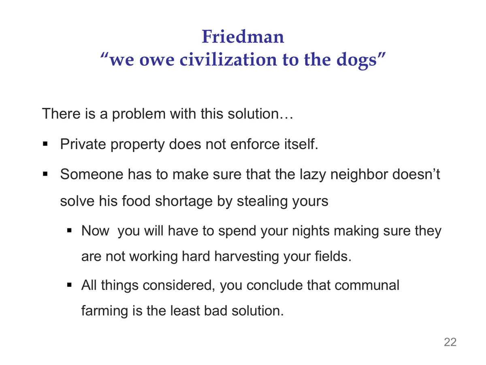
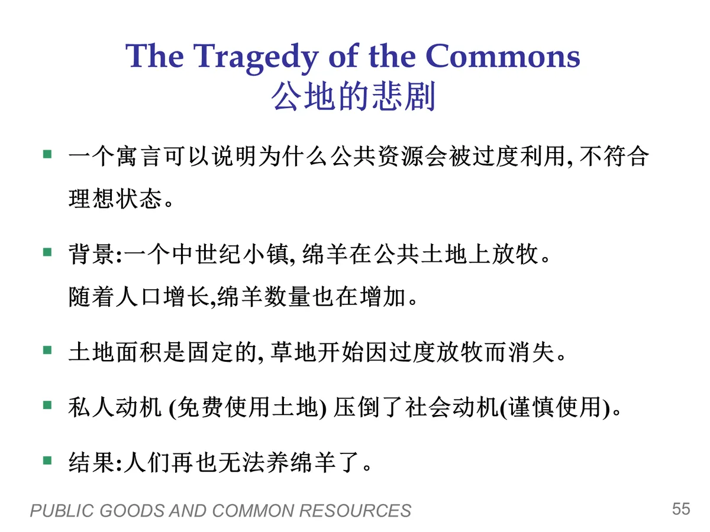

1
---
Coase’s surprising answer: it doesn’t matter!
Coase Theorem: in the absence of transaction costs, if property rights are well-defined and tradable, then voluntary negotiations will lead to efficiency
It doesn’t matter how rights are allocated initially…
…because if they’re allocated inefficiently, they can be sold/traded until they’re allocated efficiently
---
Different angle to view the Coase Theorem: How should property rights be allocated?
2
---
Obviously, efficient for me to own it
But we don’t need the law to give me the car
If I start out owning the car: no reason for you to buy it, I end up with it
Outcome is efficient
If you start out owning the car: clear incentive for me to buy it, I end up with it
Outcome also efficient
---
Example of Coase: you have a car worth $3,000 to you, $4,000 to me
3
---
Regardless of who owns the car at first, we get to the efficient outcome
Efficiency doesn’t care about distribution – how much money we each end up with – just who ends up with the car at the end.
And that doesn’t depend on who starts with it.
The key: lack of transaction costs
---
Example of Coase: you have a car worth $3,000 to you, $4,000 to me
4
---
Property rights have to be well-defined…
We need to be clear on who has what rights, so we know the starting point for negotiations
…and tradable…
We need to be allowed to sell/transfer/reallocate rights if we want
…and there can’t be transaction costs
It can’t be difficult or costly for us to buy/sell the right
---
The conditions for this to hold
5
---
Equilibrium in competitive markets
given prices, consumers maximize utility
given prices, firms maximize profits
prices are such that all markets clear
Then equilibrium is efficient, but not when there are externalities, or “missing markets”
Allowing the parties to negotiate with each other is like introducing a “missing market” in pollution/air rights
---
Relating Coase to invisible hand
The role of transaction costs
---
Although it’s important to understand the logic of the Coase theorem, you should also realize that in this case, the no transactions cost assumption is probably highly unrealistic.
As we have been discussing last week, the logistic and coordination problems of organizing hundreds of villagers to jointly bribe a pollution factory to install an abatement equipment is already a formidable transactions cost.
---
PUBLIC GOODS AND COMMON RESOURCES
---
6
The role of transaction costs
---
In the past few years, several cities in China have banned smoking in public places such as restaurants and bus stations
Supporters of the bans argue that smokers impose externalities on non-smokers, so that when smoking is permitted, the outcome is suboptimal.
---
PUBLIC GOODS AND COMMON RESOURCES
---
7
The role of transaction costs
---
The Coase theorem suggests otherwise
Even in the absence of a smoking ban, non-smokers can always bribe smokers to put out their cigarettes.
Such bribes will be successful when they ought to be—when the costs of second-hand smoke exceed the benefits to smokers of their firsthand smoke.
---
PUBLIC GOODS AND COMMON RESOURCES
---
8
The role of transaction costs
---
But are such bribes feasible?
Obvious NOT, as there are transaction costs: nobody wants to interrupt his dinner for an extended bargaining session involving everyone in the restaurant.
---
PUBLIC GOODS AND COMMON RESOURCES
---
9
妙处在于，老板因此有充分激励把外部性完全内部化（internalize the externality）——他把不吸烟者承受的全部外部成本，当作自己的成本来对待。因为顾客的支付意愿变化，最终都落进他的口袋。
一个「定价的中间人」，把几十个人的谈判，压缩成了一个人的决策。
幻灯片原文 / 板书
The role of transaction costs
---
But that’s not the only form a bribe can take.
Each restaurant has an owner who can charge higher prices to nonsmokers if he bans smokers from the bar.
This is equivalent to the case in which nonsmokers pay to smokers for them not to smoke
This leaves the owner with every incentive to fully internalize the externality—that is, he treats all external costs to nonsmokers as if they were costs to him personally.
---
PUBLIC GOODS AND COMMON RESOURCES
---
10
The role of transaction costs
---
The owner bans smoking if the benefits of the ban exceed its costs, and otherwise not.
That’s because every cost and every benefit hits the owner’s pocket through customers’ willingness to pay, and therefore every cost and every benefit gets weighed in the owner’s decision.
---
PUBLIC GOODS AND COMMON RESOURCES
---
11
The role of transaction costs
---
In general, when owners set prices, “bribes” easily take place in the form of higher or lower prices, so that transactions costs are typically lower, and the Coase theorem may apply.
If the owner chooses to allow smoking, that might be because smoking is the efficient outcome.
A law that overrides the owners’ decision can only convert an efficient outcome to an inefficient one.
---
PUBLIC GOODS AND COMMON RESOURCES
---
12
The role of transaction costs
---
The situation would be quite different in, say, a public library or a train station, where no admissions fees are charged.
Here transactions costs are higher because we are back to the case where nonsmokers must negotiate with smokers directly.
In this case, nobody would claim that the Coase theorem is applicable.
---
PUBLIC GOODS AND COMMON RESOURCES
---
13
15
---
“A primary function of property rights is that of guiding incentives to achieve a greater internalization of externalities”
“[ In order for an externality to persist, ] The cost of a transaction in the rights between the parties… must exceed the gains from internalization.”
“Property rights develop to internalize externalities when the gains from internalization become larger than the cost of internalization.”
---
Harold Demsetz “Toward a Theory of Property Rights”
16
---
Private ownership of land among Native Americans
Before fur trade…
externality was small, so gains from internalization were small
gains < costs no private ownership of land
As fur trading developed…
externality grew, so gains from internalization grew
gains > costs private property rights developed
---
Harold Demsetz “Toward a Theory of Property Rights”
17
---
A close relationship between the development of private rights in land among native Americans and the development of the commercial fur trade.
Hunting has a negative externalities: because of the lack of control over hunting by others, it is in no person’s interest to invest in increasing or maintaining the stock of animals
Overly intensive hunting takes place.
---
Harold Demsetz “Toward a Theory of Property Rights”
18
---
Before the fur trade became established, hunting was carried on primarily for purposes of food and the relatively few furs that were required for the hunter’s family.
The externality was clearly present… but these external effects were of such small significance that it did not pay for anyone to take them into account.”
---
Harold Demsetz “Toward a Theory of Property Rights”
19
---
The advent of the fur trade had two immediate consequences.
First, the value of furs to the Indians was increased considerably.
Second, and as a result, the scale of hunting activity rose sharply.
Both consequences must have increased considerably the importance of the externalities associated with free hunting.
As a result, the property right system began to change
---
Harold Demsetz “Toward a Theory of Property Rights”
P2120
课件第 21 页 · 点击放大
David Friedman 的一个思想实验，把时间拨到公元前 10000 或 11000 年：你是原始部落的一员，土地共同耕作。
20
---
The date is 10,000 or 11,000 B.C. and you are a member of a primitive tribe that farms its land in common.
Farming land in common is a pain
you spend almost as much time watching each other, and arguing about who is or is not doing his share of job
---
Friedman “we owe civilization to the dogs”
21
---
It has occurred to several of you that the problem would disappear, if you converted the common land to private property.
Each person would farm his own land: if your neighbor chose not to work very hard, it would be he and his children, not you and yours, that would go hungry.
---
Friedman “we owe civilization to the dogs”
P2322

课件第 23 页 · 点击放大
但 Friedman 立刻指出这个方案有问题：私有产权不会自我执行（private property does not enforce itself）。
22
---
There is a problem with this solution…
Private property does not enforce itself.
Someone has to make sure that the lazy neighbor doesn’t solve his food shortage by stealing yours
Now you will have to spend your nights making sure they are not working hard harvesting your fields.
All things considered, you conclude that communal farming is the least bad solution.
---
Friedman “we owe civilization to the dogs”
23
---
Agricultural land continues to be treated as a commons for another
thousand years, until somebody makes a radical technological innovation:
the domestication of the dog.
Dogs, being territorial animals, can be taught to identify their owner’s
property as their territory and respond appropriately to trespassers. Now
you can convert to private property in agricultural land and sleep
soundly. Think of it as the bionic burglar alarm.
-Friedman, Law’s Order, p. 118
---
Friedman “we owe civilization to the dogs”
Useful to compare and contrast public goods and private goods in more detail. Two dimensions.
1. Excludability. 排他性，非排他性
Excludablility: people can be kept from consuming them by the producer if they have not paid for them.
Non-excludablility: If goods are produced, it is not possible to exclude people from using them.
P272. Rivalry 竞争性、非竞争性 Rivalry in consumption: cannot be consumed by more than one
2. Rivalry 竞争性、非竞争性
Rivalry in consumption: cannot be consumed by more than one person at a time.
Non-rivalry: one person’s consumption does not preclude consumption by others.
PUBLIC GOODS AND COMMON RESOURCES
---
27
---
Important Characteristics of Goods
---
Examples of excludability
Excludable 排他性: wireless internet access
Not excludable 非排他性: FM radio signals, national defense
Examples of rivalry.
Rival 竞争性: A T-shirt
Not rival 非竞争性: A copy MP3 file of music
P29Sometimes we can also have what we called “Club goods”: highly excludable but no
Sometimes we can also have what we called “Club goods”:
highly excludable but non-rival in consumption. “Artificially scarce”
You turn on the television to watch your favorite cable television show.
In so doing, you will not affect the ability of others to watch that same show.
Therefore, cable TV is a non-rival good, because many people can watch at the same time without disrupting the ability of others to watch.
However, individuals can be excluded from watching cable TV if they do not pay for the service.
Thus, it is a good that is excludable.
P30Sometime we can have “Common Resources”: non-excludable but rival in consumption
Sometime we can have “Common Resources”: non-excludable but rival in consumption.
Example:
Open-access lake is available to all fishermen
But the fish they catch cannot be caught by another fisherman and are thus rival.
P31What we have studied so far are ordinary private goods: both highly excludable a
What we have studied so far are ordinary private goods:
both highly excludable and highly rival in consumption.
A chocolate that you have just purchased at the store:
Once you purchase and eat that specific chocolate, no one else can:
you have perfectly excluded others from buying that chocolate
Thus, your consumption has reduced the ability of another person to consume the chocolate
in fact, your consumption has created a one-to-one reduction in candy bars available to others.
---
Private goods vs public goods
31
---
Public Goods, 即公共产品（也叫公共品）是指可供多个个体同时消费而不会降低任何个体消费价值的产品或服务。
公共产品的这一关键特征,即多个个体可以消费同一种产品而不会降低其价值,因此公共产品具有非竞争性。
纯公共产品还具有非排他性,因为无论个体是否为之付费,都无法阻止其消费该产品。
例如新鲜空气、公园、美景、国防等都是公共产品。
---
Private goods vs public goods
P33Public goods: non-rival in consumption, and non-excludable. Consider protecting
Public goods: non-rival in consumption, and non-excludable.
Consider protecting the earth from climate change.
Governments around the world spend billions of dollars annually to curb harmful greenhouse gases.
Even if people failed to pay their taxes to support such environmental programs, governments cannot exclude them from enjoying the benefits.
---
Private goods vs public goods
P34Public goods：non-rival in consumption and are non-excludable. This is in sharp c
Public goods：non-rival in consumption and are non-excludable.
This is in sharp contrast to the cable TV case
While cable television is an excludable good, enjoying earth’s comfortable climate is not.
National defense is another example of public good
---
Private goods vs public goods
P35A road is which of the four kinds of goods? Hint: The answer depends on whether
A road is which of the four kinds of goods?
Hint: The answer depends on whether the road is congested or not, and whether it’s a toll road or not. Consider the different cases.
---
QuestionL categorizing roads
---
34
P36Rival in consumption? Only if congested. Excludable? Only if a toll road. Possib
Rival in consumption? Only if congested.
Excludable? Only if a toll road.
Possibilities:
Uncongested non-toll road: public good
Congested non-toll road: common resource
Congested toll road: private good
---
Answers
---
35
PUBLIC GOODS AND COMMON RESOURCES
---
36
---
Public goods and common resources
---
For both public goods and common resources, externalities arise because something of value has no price attached to it.
So, private decisions about consumption and production can lead to an inefficient outcome.
Public policy can potentially raise economic well-being.
PUBLIC GOODS AND COMMON RESOURCES
---
37
---
Public Goods
---
Public goods are difficult for private markets to provide because of the free-rider problem.
Free rider: a person who receives the benefit of a good but avoids paying for it
If good is not excludable, people have incentive to be free riders, because firms cannot prevent non-payers from consuming the good.
Result: The good is not produced, even if buyers collectively value the good higher than the cost of providing it.
PUBLIC GOODS AND COMMON RESOURCES
---
38
---
Public Goods
---
If the benefit of a public good exceeds the cost of providing it, the government should provide the good and pay for it with a tax on people who benefit.
Problem:
Measuring the benefit is usually difficult.
Moreover, public provision would result in incentive problem on the cost side
In general, efficient provision of public goods is more difficult than that of private goods.
PUBLIC GOODS AND COMMON RESOURCES
---
39
---
Some Important Public Goods
---
National defense
Knowledge created through basic research
Fighting poverty
Government Provision of Public Goods
---
Standard cost-benefit logic applies to the case of providing public goods:
The government should expand production until marginal benefits equal marginal costs.
That is, if the marginal benefits exceed the marginal costs of providing the next unit, it should be provided.
Private Provision of Public Goods
---
Although governments are important providers of public goods, they are not the sole providers.
Many public goods are provided through other channels, such as private donations, which are indeed an effective way to provide public goods.
Private provision of public goods refers to any situation in which private citizens make contributions to the production or maintenance of a public good.
P48Many avenues exist for such provision, but the most important is through private
Many avenues exist for such provision, but the most important is through private donations of time and money.
Globally, rain forests are being saved through private cash donations to the World Wildlife Fund.
Cures for illness (such as Alzheimer and heart disease) have been financed in part by individuals donating dollars to research funds.
Likewise, Wikipedia is maintained by the masses donating their time and knowledge.
---
Private Provision of Public Goods
P49So what is the scope of private donations of money? Since 1971, individual contr
So what is the scope of private donations of money?
Since 1971, individual contributions to charitable causes have increased from roughly $125 billion annually to approximately $375 billion per year by 2015.
Even though the recent giving levels already represent an important fraction of our economy, experts predict that the combination of increased wealth and an aging population will lead to an even higher level of giving in the coming years.
---
Private Provision of Public Goods
Considering the voluntary nature of giving, you may think this form of public good provision might be preferable to governments providing public goods.
But we should be careful with this line of reasoning, because certain important public goods, such as national defense or local weather alerts, might be considerably underprovided if left to private sources.
---
Private Provision of Public Goods
P52An example can help us understand the danger of leaving public good provision en
An example can help us understand the danger of leaving public good provision entirely in the hands of the private market.
Many scientists believe that species are currently going extinct at a faster rate than at any time in the history
To deal with this problem, hundreds of conservation groups have been formed with the help of private donations.
---
Private Provision of Public Goods
P53Question: Which types of species do you think their donors are most likely to he
Question: Which types of species do you think their donors are most likely to help?
The answer, interestingly, is that charismatic species and those that most resemble humans, such as panda bears and monkeys, receive the most support.
If such funding comes at the expense of funding keystone species—species that play an important role in the ecosystem—it will be dangerous for the vitality of our ecosystem
PUBLIC GOODS AND COMMON RESOURCES
---
54
---
Common Resources
---
Like public goods, common resources are not excludable.
Cannot prevent free riders from using
Little incentive for firms to provide
Role for govt: seeing that they are provided
Additional problem with common resources: rival in consumption
Each person’s use reduces others’ ability to use
Role for govt: ensuring they are not overused
P56PUBLIC GOODS AND COMMON RESOURCES

课件第 56 页 · 点击放大
公地的悲剧（The Tragedy of the Commons）。一个寓言说明了公共资源为什么会被过度利用：
PUBLIC GOODS AND COMMON RESOURCES
---
55
---
The Tragedy of the Commons 公地的悲剧
---
一个寓言可以说明为什么公共资源会被过度利用, 不符合理想状态。
背景:一个中世纪小镇, 绵羊在公共土地上放牧。 随着人口增长,绵羊数量也在增加。
土地面积是固定的, 草地开始因过度放牧而消失。
私人动机 (免费使用土地) 压倒了社会动机(谨慎使用)。
结果:人们再也无法养绵羊了。
PUBLIC GOODS AND COMMON RESOURCES
---
56
---
The Tragedy of the Commons
---
这种悲剧是由于负的外部性造成的
允许自己的羊群在公共土地上放牧会降低土地质量，从而降低了其它家庭的产量。
人们忽视了这种外部成本, 导致了对土地的过度利用。
PUBLIC GOODS AND COMMON RESOURCES
---
57
---
Policy Options to Prevent Overconsumption of Common Resources
---
Directly regulate use of the resource
Impose a corrective tax to internalize the externality
example: hunting & fishing licenses, entrance fees for congested national parks
Auction off permits allowing use of the resource
example: spectrum auctions by the U.S. Federal Communications Commission
If the resource is land, convert it to a private good by dividing and selling land parcels to individuals
PUBLIC GOODS AND COMMON RESOURCES
---
59
---
CASE STUDY
---
Some firms use spam ads or spam text messages (or firm consumes spamming activities) to advertise their products.
Spam is not excludable: Firms cannot be prevented from spamming.
Spam is rival: As more companies use spam, it becomes less effective.
Thus, spam is a common resource (for these firms)
Like most common resources, spam is overused – which is why we get so much of it!
P61PUBLIC GOODS AND COMMON RESOURCES
课件第 61 页 · 点击放大
结论第一页：公共品倾向于供给不足，共有资源倾向于被过度消费。
根源是产权没有被良好界定。两个对照写得极清楚：
没有人拥有空气，所以没有人能向排污者收费。结果：污染太多。
没有人能向国防的受益者收费。结果：国防太少。
政府有可能用适当的政策解决这些问题——注意「有可能」，不是「一定」。政策本身也有成本与失灵。
幻灯片原文 / 板书
PUBLIC GOODS AND COMMON RESOURCES
---
60
---
CONCLUSION
---
Public goods tend to be under-provided, while common resources tend to be over-consumed.
These problems arise because property rights are not well-established:
Nobody owns the air, so no one can charge polluters. Result: too much pollution.
Nobody can charge people who benefit from national defense. Result: too little defense.
The govt can potentially solve these problems with appropriate policies.
P62A good is excludable if someone can be prevented from using it. A good is rival
A good is excludable if someone can be prevented from using it. A good is rival in consumption if one person’s use reduces others’ ability to use the same unit of the good.
Markets work best for private goods, which are excludable and rival in consumption. Markets do not work well for other types of goods.
---
61
---
CONCLUSION
P63Public goods, such as national defense and fundamental knowledge, are neither ex
Public goods, such as national defense and fundamental knowledge, are neither excludable nor rival in consumption.
Because people do not have to pay to use them, they have an incentive to free ride, and firms have no incentive to provide them.
Therefore, the government provides public goods, using cost-benefit analysis to determine how much to provide.
---
62
---
CONCLUSION
P64Common resources are rival in consumption but not excludable. Examples include c
Common resources are rival in consumption but not excludable. Examples include common grazing land, clean air, and congested roads.
People can use common resources without paying, so they tend to overuse them.
Therefore, governments try to limit the use of common resources.
---
63
---
CONCLUSION